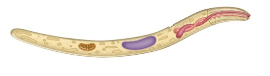
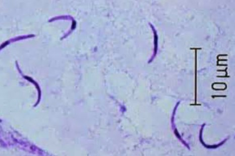
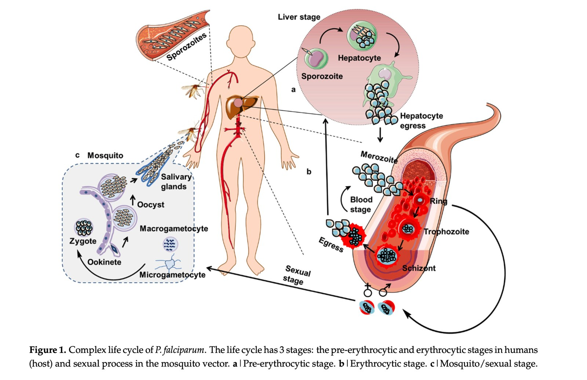
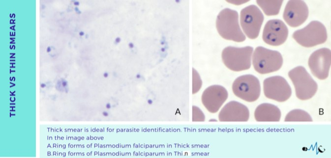
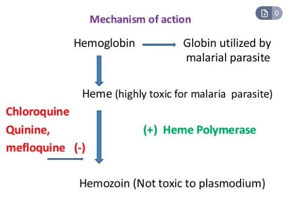

Parasite 2 · protozoan
Plasmodium — malaria, and the clock in the fever
Malaria is the largest disease in this lecture by every measure — cases, deaths, and historical toll — and it is also the one with the most moving parts. The good news, straight from the lecturer when a student asked whether all the species need differentiating: “there's only two of them” that really matter, and he wants you to know how malaria WORKS rather than to memorize the genus.


The species
| Species | Status | Fever interval |
|---|---|---|
| Plasmodium falciparum | Most common AND most virulent — the one that kills | IRREGULAR |
| Plasmodium vivax | The other common human agent | 48 hours |
| Plasmodium ovale | Less common | 48 hours |
| Plasmodium malariae | Less common | 72 hours |
| Plasmodium knowlesi | Less common | 24 hours |
Do not memorize this as four arbitrary numbers. The interval is set by the synchronized moment when infected red blood cells are lysed and a new wave of merozoites bursts into the circulation. The parasite's erythrocytic cycle length is the fever period.
So the pattern makes sense: knowlesi 24 h · vivax and ovale 48 h · malariae 72 h. And falciparum is IRREGULAR precisely because its cycles are not synchronized — which is one reason it is the most dangerous: there is no reliable rhythm and no fever-free window in which the patient recovers. The lecturer's aside: “Be good if we had something for falciparum.”
Scale — why this is the most important infection in the world
~300 million
Currently.
~600,000
Reported, annually.
~5 billion
Statisticians' estimate for malaria's cumulative mortality. For comparison, tuberculosis is estimated at ~1 billion, and everything else is below that. (“I don't know if they can prove that.”)
Where
Tropical and subtropical regions — sub-Saharan Africa, Asia, Oceania, Latin and South America.
This is the historical fact the lecturer most wants to land, because it dismantles the assumption that malaria is somebody else's problem.
- Up until the 1880s, malaria was considered endemic in every state except Alaska. Philadelphia. Minnesota. Anywhere.
- It was probably not native — it appears to have arrived with European settlers and West African slaves. The first American epidemic was at Jamestown in 1607.
- Washington, Lincoln and Grant all had malaria, acquired domestically. Sessions of the Continental Congress were stopped by malaria outbreaks.
- The Columbus aside: some writings suggest Columbus and his crew may have contracted malaria during the voyage — but they could not have brought it to the Americas, because the mosquitoes could not survive the cold of the crossing and so could not have transmitted on arrival. (The crew did, however, bring syphilis back.)
Transmission
- Essentially human-to-human transmission, via the bite of the female Anopheles mosquito. As with dengue in Part 1, humans are the reservoir — contrast with plague, where humans are a dead-end host.
- There are more than 40 species of Anopheles, and most of them can transmit it — so unlike dengue, where Aedes aegypti is singled out, you do not pick on one particular species here. Genus is enough.
- Mosquitoes are not born infected. They pick it up while feeding on an infected human, the parasite develops inside them to the sporozoite stage, and the next bite transmits it. Same vector rule as the flea and the tick.
The life cycle — two stages, and the second one is the disease
![Numbered Plasmodium life cycle diagram showing an Anopheles mosquito injecting sporozoites into human skin, sporozoites travelling to the liver and invading hepatocytes to form multinucleated schizonts in the exo-erythrocytic stage, rupture releasing merozoites into the circulation, merozoites invading red blood cells to form ring-stage early trophozoites in the erythrocytic stage, maturation to late trophozoites and schizonts with rupture and reinvasion, some parasites differentiating into male and female gametocytes that are ingested by a feeding mosquito, and development in the mosquito midgut back to sporozoites that migrate to the salivary glands](img/blood-lymph-infections-2/plasmodium-life-cycle-cdc.jpg)

- The female Anopheles bites and deposits SPOROZOITES into the dermis.“It's very much like the Babesia, by the way” — the same deposit-at-the-bite-site mechanism.
- Sporozoites enter the blood and lymphatics and reach the LIVER.This is the exo-erythrocytic (pre-erythrocytic) stage.
- They invade hepatocytes and form SCHIZONTS.Each schizont contains thousands upon thousands of MEROZOITES.
- The hepatocyte lyses and releases merozoites— which infect more hepatocytes, and eventually pour into the blood.
- Merozoites attach to RED BLOOD CELLS and transform into RING FORMS.This begins the erythrocytic stage — the stage that makes you sick.
- Ring → trophozoite → schizont → new merozoites → lyse the red cell → infect new red cells.A cyclic process. The synchrony of this lysis is what sets the fever interval.
- Some parasites become gametocytes, which a feeding mosquito ingests— closing the loop and infecting the next mosquito.
On top of the red cell destruction, the process causes release of pro-inflammatory cytokines, which “also contribute to the manifestations.” Same two-source model as Babesia.
Both parasites are deposited at a bite site and both end up multiplying inside red blood cells producing ring forms. The difference is the liver.
Plasmodium has an obligatory pre-erythrocytic LIVER stage, where a single sporozoite amplifies into thousands of merozoites before the blood stage even begins. Babesia goes straight from the dermis to the red blood cell — no liver stage at all.
That liver stage is also where the vaccine attacks (see below), and it is why malaria has an incubation of 1–4 weeks — the liver phase is silent.
Clinical
- Incubation 1–4 weeks.
- Chills, rigors and fever at regular intervals — per the species table above — with sweating between.
- Abdominal pain, nausea, vomiting, diarrhea, and jaundice. These occur at intervals, driven by the waves of red cell lysis.
- Severe disease: infected red cells can cause infarcts and capillary leakage → organ dysfunction in the liver, kidneys, respiratory system and even neurologically (cerebral malaria) → severe anemia, disseminated intravascular coagulation, shock.
- In some cases patients go into shock and die within 24 hours.
As the lecturer notes wearily: “severe anemia, DIC — the story is over and over. It's the same thing for all of these guys.” That is the point of Parts 1 and 2 taken together: the final common pathway is always the same. The front end — the animal, the vector, the geography — is what differs.
Diagnosis

THICK smear
The red blood cells are PRE-LYSED, so the parasites are released and concentrated onto the slide.
- Purpose: a SCREEN — “kind of a presence/absence test. Are they there? There they are.”
- More sensitive, because you are looking through far more blood per field.
- You cannot tell which species, because the cell context is gone.
THIN smear
The parasites are visualized WITHIN intact red blood cells.
- Purpose: IDENTIFY the parasite type and estimate parasite density.
- Preserved cell morphology lets you speciate.
- Less sensitive — fewer parasites per field.
Both use a Giemsa stain, both “are very nice, but it takes a lot of time and you need somebody who's fairly proficient at doing this quickly.”
Mnemonic: thick = there or not; thin = which one.
- Suspect malaria in a febrile patient with characteristic symptoms and epidemiologic exposure.
- Rapid diagnostic tests detect parasite antigens, run in about 10 minutes, and are much easier for everybody — especially in resource-limited areas. This matters practically: “a lot of places you're going to see malaria are going to be in resource-limited areas where you don't have maybe even microscopes,” let alone PCR.
- PCR where available.
Treatment

- The parasite eats hemoglobin.It breaks hemoglobin down; the globin is used by the parasite as an amino acid source.
- That leaves free HEME — which is highly TOXIC to the parasite.It has created its own poison as a by-product of feeding.
- So it detoxifies it: HEME POLYMERASE converts toxic heme into non-toxic HEMOZOIN.“All right, that's clever.”
- Chloroquine, quinine and mefloquine all block that step.Heme accumulates to concentrations that are toxic to the parasite, and it dies.
Notice the elegance: the drug does not attack the parasite directly at all. It disables the parasite's own waste-disposal system and lets the parasite poison itself.
| Situation | Treatment |
|---|---|
| Chloroquine-sensitive | Chloroquine phosphate — the preferred treatment “as long as it's sensitive to the drug” |
| Chloroquine-resistant | Artemisinin-based combination therapy (ACT), e.g. artemether–lumefantrine |
The vaccine — RTS,S/AS01 (Mosquirix)
- Recombinant. P. falciparum surface proteins are produced in yeast cells — Saccharomyces cerevisiae.
- Combined with hepatitis B surface protein, which acts purely as a CARRIER protein. The lecturer is emphatic that this is incidental: “Nothing special about the hepatitis B itself. It's not part of it. It's just something that is a side issue.” It is scaffolding, not a target.
- Plus an adjuvant: AS01.
- It targets the SPOROZOITE stage. The antibodies it raises are specific for sporozoites — so they neutralize the parasite in the bloodstream before it reaches the liver, cutting the life cycle at step 2. “You stop them before they get to the liver.”
AS01 is a combination of two things:
- An extract derived from the endotoxin / outer lipopolysaccharide of Salmonella, and
- A saponin from the Chilean soapbark tree.
“Mix that together and that's a great adjuvant. It hurts like hell though.” This is the same adjuvant family used in Shingrix, and it is why most people have trouble with the Shingrix vaccine — the reactogenicity is the adjuvant, not the antigen. A nice piece of cross-referencing: the same immunological trick shows up in two unrelated vaccines.
In class the protection from RTS,S/AS01 was given as “about 80 to 90% protection, so it's a pretty good vaccine.” That is the number stated in the lecture, so it is what to reproduce if the exam asks what he said.
Be aware, though, that the published phase 3 trial efficacy is substantially lower — on the order of ~30–50% against clinical malaria in the first year, declining thereafter, which is why the vaccine is deployed as one part of a package alongside bed nets and chemoprevention rather than as a stand-alone solution. If a board question asks about RTS,S efficacy, the lower figure is the defensible one. Flagging the discrepancy rather than quietly picking one.
Asked directly whether you need to differentiate all the species, he said: “there's only two of them” that are common — falciparum (most common and most virulent) and vivax — and that testing the rare ones would be “a really nasty” question. His actual goal: “I would like you to know about HOW MALARIA WORKS.”
Translated into study priorities: life cycle > thick vs thin smear > chloroquine mechanism > fever intervals > species minutiae. And if a stem asks which species a patient most likely has without other clues, the answer is falciparum, because it is the most common.
Q: A traveller returns from Nigeria and develops fever with rigors and sweats occurring without any discernible pattern, plus jaundice and confusion. A thick smear is positive. What species is most likely, why is the fever irregular, and what does the confusion signify?
Plasmodium falciparum — the most common and most virulent species, and the expected answer for sub-Saharan Africa.
The fever is irregular because falciparum's erythrocytic cycles are not synchronized. Fever spikes are produced by waves of red blood cell lysis releasing merozoites; when those waves are synchronous you get the clean 24-, 48- or 72-hour periodicity of knowlesi, vivax/ovale and malariae. Falciparum lacks that synchrony, so there is no rhythm and no fever-free recovery window.
The confusion signifies severe malaria with neurologic involvement — cerebral malaria. In severe disease, infected red cells cause infarcts and capillary leakage producing organ dysfunction (liver, renal, respiratory, neurologic), along with severe anemia, DIC and shock; patients can die within 24 hours. This is a medical emergency. The thick smear told you parasites are present; now get a THIN smear to confirm the species and quantify the parasite density.
Q: Explain precisely how chloroquine kills Plasmodium.
The parasite digests hemoglobin inside the red cell and uses the globin portion. This liberates free heme, which is highly toxic to the parasite itself. To survive its own metabolism, the parasite uses heme polymerase to convert toxic heme into inert hemozoin.
Chloroquine — along with quinine and mefloquine — inhibits that conversion. Heme therefore accumulates to toxic concentrations and kills the parasite. The drug never attacks the organism directly; it disables the detoxification step and lets the parasite poison itself. Where chloroquine resistance is present, use artemisinin-based combination therapy (ACT) such as artemether–lumefantrine.
Q: The malaria vaccine RTS,S/AS01 raises antibodies against the sporozoite. Why is that the stage chosen, and what is the hepatitis B surface protein doing in it?
The sporozoite is the stage chosen because it is the bottleneck. A mosquito deposits sporozoites into the dermis, and they must reach hepatocytes before the infection amplifies — a single sporozoite becomes a schizont containing thousands of merozoites. Neutralizing antibody at the sporozoite stage stops the parasite in the blood before it reaches the liver, cutting the cycle before any amplification occurs. Once the erythrocytic stage begins, the parasite burden is orders of magnitude larger.
The hepatitis B surface protein is purely a CARRIER protein. The P. falciparum surface antigens are produced recombinantly in yeast (Saccharomyces cerevisiae) and fused to it so they assemble and present well to the immune system. It is not itself a target and confers nothing relevant to malaria — “nothing special about the hepatitis B itself… it's just a side issue.” The AS01 adjuvant (Salmonella LPS-derived component plus a Chilean soapbark saponin) supplies the immune stimulation — and the sore arm.